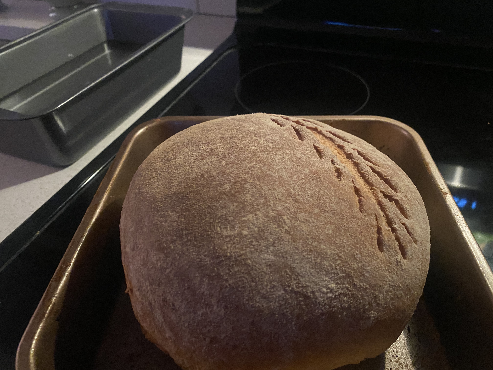

Today, Sunday October 13th, I decided to spend my day by knocking out some homework that I have been procrastinating. The problem is, I always need some motivation to get the things I need done. I admit this is not a great habit, but it helps me to stay focused and productive. Today I decided what I was going to do to give myself breaks between tasks was to bake some bread. I started off by kneading the dough and starting off the process. The proofing of the bread allowed me to take much needed breaks between doing my homework so I didn't get too overwhelmed.
My proofed dough before it was put in the oven.
Once the bread was done proofing, I had to troubleshoot the baking process. I do not have a dutch oven, which would allow my bread to be heated evenly giving it an even thick crust and proper baking. The recipe I was following online, link to recipe here, gave some tips on how to combat this issue to insure the best baking of the bread. The solution I opted for was to add a basin of boiling water to the bottom of the oven to supply moisture to oven, and of course the bread. I baked the bread on a flat pan, and with the use of the water basin, I think it turned out pretty good!
My bread out of the oven

Overall, I had a fun time making this bread and it allowed for me to have a fun time while getting my work done!
What I'm Currently Watching
Published on:
By: Mariana Vangelov
I think the shows and movies that people enjoy and watch can be very telling, and media in general is a great way to bond with other people. I've met friends through mutual interest in shows, and although we don't watch them anymore, we always connect on the new shows that we watch and recommend to each other. In the past two weeks, because of a recommendation I had recieved, I have been watching The Lord Of The Rings Trilogy. I have been watching the extended cuts, as my friend insists this is the only way one should watch it. I have never seen them before, and because of this recommendation from a friend, I have been able to dive deep into a new world of fiction that I haven't seen before.
Another piece of media I have been keeping up with is the Anime One Piece. One Piece is one of the biggest anime right now, with an audience all around the world. I began watching this lengthy show back in August of 2023, and caught up in early February of 2024. Despite It's length of 1122 episodes, I never became bored, and I was absolutely captivated with the characters, world building, and plot of this anime. Once I finished catching up to the anime, I began to read the Manga since it is still ongoing. It is currently one of my favorite pieces of media and one of my favorite conversation topics with my friends. If you are ever interested in starting something long, this show certainly is worth the time it takes to finish!